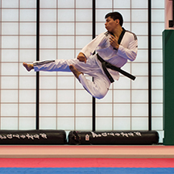
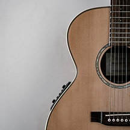

Consistent Experiences
UX220 Assignment 2
-

2000-2007
Tae Kwon Do
One of the first consistent efforts that I made as a child was Tae Kwon Do. Between the ages of three and eleven, I would go with my father to this martial art and learn to “fight” within the constraints of the art. What was good about the experience is that it taught me discipline, respect and had me develop a desire for learning new athletic activities. My favorite memory from doing the sport was when I received my black belt. It was truly one of the most memorable experiences of my life and probably the most accomplishing thing I had ever done at the time. There was few things I didn’t enjoy about the sport except for maybe the fact that going to the sport 4 days a week really took time away from my social interactions with kids my age, leaving me with very few friends outside of school. a. Chosen Grade: B
-

2015-2017
Dominos Pizza
Another consistent experience that I had was working at Dominos Pizza. I worked at Dominos for a year and a half between 17 and 19 before I went to college and during my time in college. What was good about working at Dominos Pizza was that I learned what humble beginnings were. I used to think money was easy to obtain until I started working minimum wage at Dominos. My favorite memory working there was one day it, when we were at our busiest with orders, I was working the oven and pizzas were coming out so fast that not only was I taking the pizzas out with the spatula, but also my hands! What I didn’t enjoy about the job was the rude customers and high stress situations you’re put in while working. a. Chosen Grade: D
-
2016-Present
York Recreation Centre
The third consistent experience I had was working at the York Recreation Centre. I worked at York for 3 years between the ages of 19 – 22. I loved working at the rec center. It taught me how to interact with people in a civilized manner and taught me how to do proper customer service when needed. My favorite memory working there was when I signed up a family to join the facility and they were new to the country. When they found out the center was free, they were so happy that they thanked me profusely and it made my day. What I didn’t enjoy about working at the center was the few times I was threatened by patrons. a. Chosen Grade: A
-

2013-2015
Guitar
Playing instruments was a large part of my childhood, but playing the guitar was the longest standing instrument in my life. I played for 2 years between 16 and 18 but found school was taking over my life and I didn’t have a chance to keep it up. What was good about it was that it taught me discipline and gave me a love of classic rock. My favorite memory from playing the guitar was when I did a concert in front of friends and family and played Hotel California flawlessly. I was impressed with myself even though I was so nervous, and it really taught me a lot. What I hated about the guitar was practicing. a. Chosen Grade: A
-
2011-2015
Spirit of Math
Spirit of Math. A math program I took throughout high school, grades 9 – 12. What was good about taking the program was that it helped my math skills develop tremendously. My favorite memories while at Spirit of Math was doing the mental math questions at the end of class; those were my specialty. I did not enjoy the extra homework that was given to me all throughout high school.